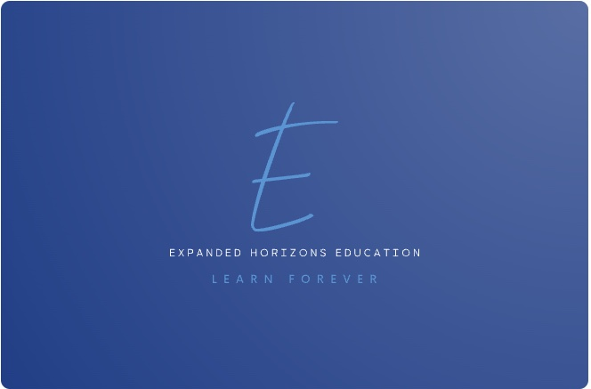

EXPANDED HORIZONS EDUCATION
We provide tutoring in physics, astronomy, algebra, trigonometry, writing, test prep and more. We also provide computer education to help people learn how to use their electronic devices.
We provide tutoring online via Zoom or in person in the Aurora, Illinois area. Want more information or to schedule a lesson? Contact us at .
Expanded Horizons Education is a division of Expanded Horizons Ltd., founded by Dr. Matt Wiesner. Dr. Wiesner has a PhD in physics from Northern Illinois University and almost two decades of experience teaching and tutoring from elementary school children to middle schoolers to high schoolers to undergraduates to graduate students. You can read more about his education at his ORCID page.